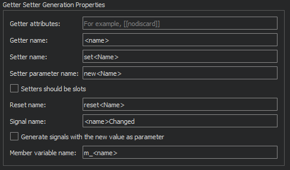

Quick Fixes
To set global preferences for C++ quick fixes, go to Preferences > C++ > Quick Fixes.
Function Locations
In the Generated Function Locations group, set whether quick fixes should generate getter and setter functions in the header file (inside or outside the class) or in the implementation file.
Function Names and Attributes
In the Getter Setter Generation Properties group, specify additional settings for getter and setter names, attributes, and parameters. You can specify that setter functions should be created as slots and that signals should be generated with the new value as a parameter.

Namespace Handling
In the Missing Namespace Handling group, select whether to generate missing namespaces, add using namespace where necessary, or rewrite types to match the existing namespaces.

Custom Parameter Types
In the Custom Getter Setter Templates group, specify how the code of a getter or setter function for a certain data type should look like. This is necessary for types where assignment cannot use operator=, as in the pre-defined settings for unique_ptr or where operator== is not suitable for comparison, as in the pre-defined settings for floating-point types. For example, if you have a special type MyClass, you can specify that a function, myCompare, should be used for comparison rather than the default of ==.
To specify special handling for a custom parameter type, select Add and set the parameter type, comparison, return expression, and return type. In the Return type field, use <new> and <cur> to access the parameter and current value. Use <type> to access the type and <T> for the template parameter.
Usually, arguments are passed by using a const reference. To pass arguments of a particular type as values, list them in the Value types field. Namespaces and template arguments are removed. The real Type must contain the given Type. For example, int matches int32_t but not vector<int>, and vector matches std::pmr::vector<int> but not std::optional<vector<int>>.
To return non-trivial objects by using a const reference, select the Return non-value types by const reference check box.
See also Apply quick fixes, Find symbols, Rename symbols, Specify settings for quick fixes, C++ Quick Fixes, and QML Quick Fixes.